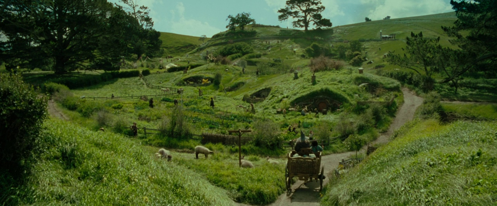
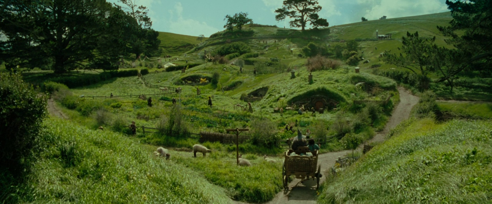

Lord of the Rings: The Fellowship of the Ring Review
Peter Jackson’s The Lord of the Rings: The Fellowship of the Ring is a cinematic triumph that redefined the fantasy genre. Released in 2001, this epic adaptation of J.R.R. Tolkien’s beloved novel transports audiences to Middle-earth, a world teeming with rich lore, breathtaking landscapes, and unforgettable characters. At its core, The Fellowship of the Ring is a story of courage, friendship, and the struggle between good and evil, all set against the backdrop of an immense and perilous journey.
From the peaceful hills of the Shire to the shadowed depths of Moria, the film captures the magic and grandeur of Tolkien’s vision with astonishing detail. Every frame is infused with a sense of wonder, making Middle-earth feel like a real, living place. But beyond its sweeping visuals and groundbreaking effects, The Fellowship of the Ring is a deeply human story—one that explores the weight of destiny, the cost of heroism, and the bonds that hold us together in the face of darkness. It’s not just a movie; it’s an experience that stays with you long after the journey begins.
The Fellowship Assembles
The cast of The Fellowship of the Ring is nothing short of legendary, bringing Tolkien’s characters to life with stunning authenticity. Elijah Wood delivers a heartfelt and vulnerable performance as Frodo Baggins, a humble hobbit burdened with the fate of Middle-earth. His quiet strength and growing resolve make him an incredibly compelling protagonist, drawing audiences into his perilous quest.
But Frodo’s journey would be impossible without the companions by his side. Ian McKellen’s portrayal of Gandalf the Grey is nothing short of iconic, embodying the wisdom, warmth, and power of the beloved wizard. Viggo Mortensen’s Aragorn is both brooding and noble, capturing the internal struggle of a reluctant king. Sean Bean’s Boromir is tragic and deeply human, delivering one of the most powerful performances in the entire trilogy.
Meanwhile, Orlando Bloom’s Legolas and John Rhys-Davies’ Gimli bring both skill and levity to the Fellowship, their growing camaraderie adding depth to the story. And of course, the rest of the hobbits—Sean Astin’s loyal and endearing Sam, Billy Boyd’s playful Pippin, and Dominic Monaghan’s mischievous Merry—infuse the film with heart and humor. Together, this ensemble creates one of the most memorable and beloved casts in cinematic history.
 



I Could Wander These Lands Forever.
More than just a film, The Fellowship of the Ring is an invitation to explore a world that feels boundless. Every mountain, every river, every whispered Elvish phrase adds to the illusion that Middle-earth exists beyond the confines of the screen. The film’s cinematography captures this vastness with breathtaking landscapes that feel untouched by time. Whether it is the tranquil beauty of Hobbiton or the shadowed, ancient halls of Moria, each setting is brought to life with an attention to detail that few films can match.
But what truly elevates the film is Howard Shore’s iconic score, which weaves itself into the story as seamlessly as the landscapes and characters. The triumphant brass of "The Ring Goes South" mirrors the Fellowship’s resolve, while the mournful strings of "The Breaking of the Fellowship" encapsulate the weight of loss and duty. The Shire’s theme, light and playful at first, takes on new meaning as the journey unfolds, reminding us of all that is at stake. Just as the visual world-building makes Middle-earth feel real, Shore’s music makes it feel alive, evoking emotions that linger long after the credits roll.
The film’s pacing allows the audience to truly soak in the world, never rushing through the quiet moments that make the story so powerful. Scenes like Gandalf’s last words before falling into shadow or Boromir’s desperate stand against the Uruk-hai hit harder because of the film’s ability to slow down and let these moments breathe. There is a richness in every frame, an authenticity that makes even the most fantastical elements feel grounded in something real.
I will never forget the picture it painted.
Few films have ever captured the magic of their source material as perfectly as The Fellowship of the Ring. From the golden glow of Rivendell to the foreboding darkness of the Mines of Moria, every frame is a testament to the craftsmanship behind the film. The combination of practical effects, miniatures, and CGI set a new benchmark for visual storytelling, immersing audiences in a world that feels both grand and intimate.
The use of forced perspective to create the illusion of hobbit size, the detailed miniatures used for towering locations like Isengard and Barad-dûr, and the breathtaking on-location shoots in New Zealand all contribute to the film’s timeless visual appeal. Even in an era dominated by CGI-heavy blockbusters, Fellowship remains a masterclass in how to blend practical and digital effects seamlessly. The film does not just show Middle-earth—it makes it feel tangible, a place you could step into if only you could find the right path.
But what makes the film truly stand out is how its visuals are used to tell the story. The cinematography shifts to match the tone of each scene—warm and inviting in the Shire, ethereal and dreamlike in Rivendell, claustrophobic and tense in Moria. The lighting, the camera angles, even the way the characters are framed all serve to reinforce the emotions at play. When Frodo first lays eyes on the One Ring in Bag End, the subtle distortion of the camera hints at the power it holds before a single word is spoken. When Aragorn steps forward to fight the Uruk-hai, the way he is framed transforms him from a wandering ranger into the leader he is destined to become.
The film’s achievements did not go unnoticed. At the 74th Academy Awards, it won four Oscars, including Best Cinematography, Best Makeup, Best Visual Effects, and Best Original Score, solidifying its status as a technical masterpiece. But beyond the accolades, what truly matters is the lasting impact of its imagery. Whether it is the sight of the Argonath standing tall over the Anduin, the last glimpse of Gandalf before he falls into darkness, or the lonely figure of Frodo at the film’s end, setting out alone with the weight of the world on his shoulders, these are images that remain etched in the minds of audiences forever.
Verdict
The Fellowship of the Ring is not just the beginning of an adventure—it is the foundation of one of the greatest cinematic achievements of all time. With its masterful storytelling, unforgettable characters, and groundbreaking visuals, it stands as a testament to the power of filmmaking. It is a story of friendship, courage, and the battle between light and darkness, woven together with such care that it remains as captivating now as it was upon its release.
Whether you watch it for its deep themes, its breathtaking visuals, or the sheer wonder of Middle-earth, it is a film that leaves a lasting impression. Even after all these years, it continues to inspire, transport, and remind us that there are still great stories left to tell.